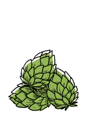

hops
Hops are the flowers of the hop plant Humulus lupulus. They are used a bittering, flavouring and stability agent in beer. While being bitter, hops also impart floral, fruity, or citrus flavours and aromas.
Many different varieties are grown around the world, with different types used for particular styles of beer. Specific hop varieties are associated with beer regions and styles, with pale largers being brewed with European noble hop varieties like Saaz (Stella Artois) and Hallertau, British ales with Fuggles and Goldings, North American beers with Cascade hops (anchor brewing company) and Columbus hops and New Zealand Pacific Gem and Motueka. Hops tend to be unstable when exposed to light or air and lose their potency after a few months' storage.